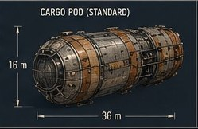
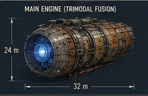
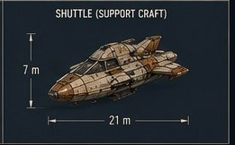
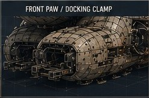
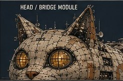
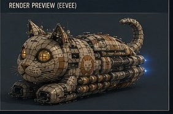

ユナイテッド・キャットフーズ / Charter Hauler Recruitment
One ship. One career. Your name in the registry.
United Cat Foods is chartering freelance haulers to keep the galaxy's cafés stocked. Start with a Kibble-class courier and a standard company loan. Fly the lanes, feed the stations, stretch the keel. Finish with a Loaf-pattern freighter that is a biography you can read on a blueprint.
Workforce Doctrine
At United Cat Foods, we believe that embracing diversity in all its forms is key to innovation: a fleet where every captain, whether human, cat, or thinking machine, can thrive and contribute to our collective on-time record. Diversity & Inclusion Initiative · Fleet Charter Division
The Charter Hauler Program
From courier to Loaf. The whole ladder.
Every hauler starts the same way: a callsign, a registry plate issued at Viroqua Prime, a Kibble-class courier with two standard pods, and a route book. Trade runs pay the loan. Contracts build reputation. Reputation opens the shipyard, where Chief Engineer Laser 128 stretches keels for captains who have earned it — and no one else.
Each frame expansion is a shipyard ceremony, treated by the cats with deadpan seriousness. The hull physically lengthens. Pod racks are added. Crew berths open. By the time DSLS Engineering signs a Loaf-pattern certification plate, the ship on the blueprint is the story of everything you hauled to get there.
| Frame | Pods | Crew | Note |
|---|---|---|---|
| Kibble frame | 2 | 1–2 | "It carries exactly enough." |
| Sardine stretch | 4 | 3 | The tin lengthens. |
| Tuna refit | 7 | 5 | First expedition-rated frame. |
| Bread conversion | 12 | 6 | "A loaf in training." |
| Loaf-pattern certification | 18 | 8 | DSLS Engineering signs the plate. |
Company Hardware
What we put under you.






The Work
Freight worth waking up for.
Charter haulers carry everything the scheduled fleet can't fit: timed runs of Time-Release Crunchies in flavor-stabilized pods, cold-chain salmon off the lunar aquafarms, sealed water tanks, catnip futures out of the L5 gardens, and live-cat escorts with opinions about your flying.
Reliable captains earn access to the deeper board: survey charters past Alpha Centauri, first-delivery rights on newly contacted markets, and the quiet, well-paid contracts the Supervisor only posts for captains she has personally watched dock.
Benefits
What a charter comes with.
Full care, all species
Medical, dental, and claw coverage on every station we serve. Thinking machines receive scheduled defragmentation leave.
Shipyard access
Frame expansions, compartment build-outs, and pod refits under Laser 128's engineering authority, priced for captains in good standing.
Fuel depot network
Pellets stocked along every charted lane. Expedition provisioning available for captains rated past the gardens.
Meal privileges
Crew access to the full Galactic Gourmet line. Feed your crew from your cargo; quality assurance is technically everyone's job.
Sanctioned nap cycles
Certified nap racks in every rated frame. Watch rotation follows the Feline-Derived Circadian Prescription.
The dispatch office
Rumors, market intel, and harvest-cycle forecasts, free with every docking. Reading the dispatches is flying well.
Open Charters & Crew Postings
On the board this cycle.
Charter Hauler, ProvisionalKibble-class courier, standard loan, Sol circuit route book. The classic start. The Auditor is ready when you are.
Fleet Charter Division · Viroqua Prime
Any species
Open now
Charter Hauler, Expedition-RatedTuna refit or better, survey pod required. Chart the lanes past Alpha Centauri and sell us the map.
Fleet Charter Division · Frontier desk
Any species
By reputation
Navigator (crew posting)Find the sunbeam routes. Captains report our best navigators are cats. The cats report this is obvious.
Crew Exchange · All stations
Cat preferred
Full time
Engineer (crew posting)Field repairs, fuel synthesis, pod integrity. Machines excel. Humans with warm hands also considered.
Crew Exchange · All stations
Any species
Full time
Comms Officer (crew posting)Hails, dispatch intel, and first contact. Must read tone. Must not panic when the answer is a slow blink.
Crew Exchange · Frontier routes
Any species
Contract
Night-Shift Warmth AuditorDuties consist primarily of sitting on things to confirm they are warm. Reports filed by posture. Shore posting.
Facilities · All stations
Cat
Nights
Chartering Process
Four steps. No surprises.
Application review. Every submission is read. Response times vary with the afternoon sun.
Structured interview. A calm conversation about the work. You will be observed from a high shelf. This is normal.
Trial run. One paid crossing, supervised, scored on competence and composure. Composure counts double.
Charter. Registry plate, loan, route book, callsign. Decisions are final. Cats do not renegotiate, though they may reconsider unprompted, later, on their own terms.
Apply
Take the charter.
Send a résumé, a service record, or a firmware manifest, whichever applies. Tell us what you keep warm, and what you would name the ship.